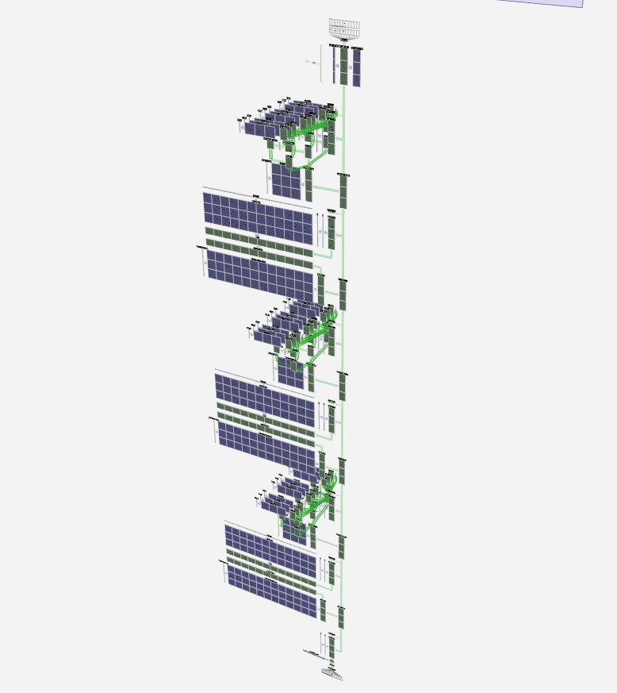

Learning Playground · Tool guide
LLM Visualization
Watch a small GPT sort six letters. Brendan Bycroft’s browser visualization lets you follow a single attention head from its input vectors to the values it mixes.
Follow the query through one head
- Read the input before starting. Open the public visualization in a browser with WebGL 2, preferably on a large screen. The introduction presents C, B, A, B, B, C. Sort those letters yourself to get ABBBCC. This gives you a way to recognize the prediction task while you explore the machinery.
- Choose Self Attention. Select Self Attention from the contents. Press Continue to move through the author’s sequence. The view isolates one head and identifies the query, key and value vectors made from the normalized input at each position.
- Pick one number. Pause on a block, zoom and hover a cell. Blue cells represent learned weights. Green cells hold intermediate numbers for the input being processed. Follow the explanation of how the dot product between a query and each eligible key produces a set of scores.
- Identify the reusable numbers. Advance to the explanation of normalizing scores and mixing values. Imagine appending one token. Previously computed keys and values remain available under causal attention. The new query still needs fresh scores and a fresh mixture. This last step connects the visualizer to the playground’s KV-cache question.
Which model are you looking at?
- The sorting network
- The tiny GPT-style network has working weights and takes a sequence over A, B and C. It follows the letter-sorting example in Andrej Karpathy’s minGPT. The simple task leaves room to inspect individual operations.
- Authored chapters
- Walk through embeddings, layer normalization, attention, softmax, projection, the feed-forward network and output probabilities. Camera moves and annotations place the reader at the part of the model named by the text.
- Larger layouts
- The visualization supports layouts for larger networks to convey their shape and scale. The default bundled working inference example is the small sorter. It is the right place to inspect the individual numbers used in this walkthrough.

How the browser gets the numbers
Bundled model weights WebAssembly inference Intermediate tensors WebGL scene Chapter annotations
The small model’s configuration and weights ship with the application. The WebAssembly implementation runs inference, and the TypeScript bridge reads weights and intermediate buffers into the visualization. Layout code assigns tensor blocks their dimensions and positions. A WebGL renderer draws the blocks, and the walkthrough controls highlights and camera timing.
This tool needs no chat model to narrate a chapter. The author wrote the math explanations and the code that coordinates them with the model. Hovering lets a reader inspect numbers from the sorting example. Clicking through the attention text is different from measuring cache memory in a production decoder. Model and buffer bridge · Model layout · Self Attention chapter.
Start a pinned local copy
In a playground checkout, use Git, Node.js with npm, and a WebGL 2 browser. The trial used Node.js 25.8.1 and npm 11.11.1 on an Apple silicon Mac. The launcher installs missing dependencies before starting Next.js.
./tools/llm-viz/start.shKeep the terminal open. When Next.js reports ready, open the local address the launcher prints and choose Self Attention. Stop the server with Ctrl+C. From a fresh directory, the following equivalent setup uses the pinned upstream repository and the package-manager route used in the trial.
git clone https://github.com/bbycroft/llm-viz.git
cd llm-viz
git checkout --detach 9da93742382f1bf36c020c38a1ace454e82c4490
npm install --legacy-peer-deps --package-lock=false
npm run dev -- --hostname 127.0.0.1For the second command sequence, append /llm to the local server address Next.js prints. The repository includes the small model weights and native.wasm. The first install needs network access for the JavaScript dependencies. Upstream scripts.
What we ran
The Play button runs the small model directly on this site. The same pinned model weights, WebAssembly runtime, and interactive chapters from the local trial are packaged together for GitHub Pages.
On November 24, 2026, Yarn failed to resolve its registry hostname. npm installed the dependencies and the Next.js 16.3.0 development server started. The walkthrough, the small model JSON and the WebAssembly binary each returned HTTP 200. Chromium displayed the six-letter example, an active WebGL 2 canvas and the Self Attention chapter with its Continue control.
React reported invalid paragraph nesting in the upstream development build. It did not prevent opening the chapter. This trial covered the bundled nano model and entry to Self Attention. The deeper sequence above is a reproducible reading route from the upstream chapter. We have no recorded exploration of all chapters, the larger layouts, or measured KV-cache performance.
Learner feedback is pending. A useful test is whether the learner can point to the old keys and values and explain why a new query still has work to do. Local observations.